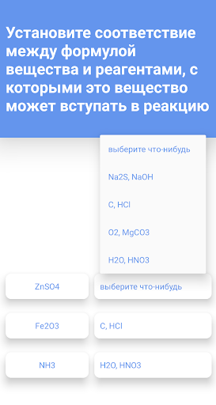
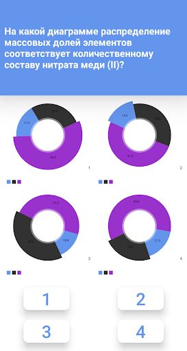
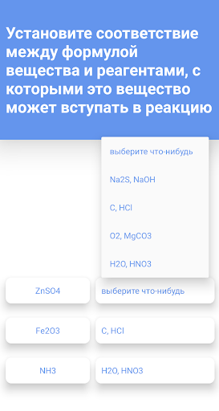
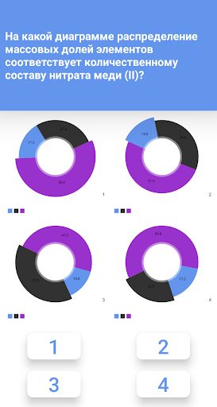

Chemistry Practice App
Year: 2019 - 2020
Overview: The Chemistry Practice App was developed as a tool for Russian chemistry students to prepare for exams. It generated quizzes based on a practice book I co-authored with my chemistry teacher, focusing on key exam topics. The app allowed students to track performance, identify weak areas, and focus on improvement.
Development Journey
I initially built the app using Unity, but after realizing it was too resource-heavy, I switched to Android Studio. This reduced the app's size by ten times and significantly improved performance. In Android Studio, I integratesd a graphing library to track user performance statistics.
Challenges & Solutions
Unity was familiar but led to performance issues on mobile devices. By switching to Android Studio, I optimized the app, significantly reducing size and battery consumption. I used a graphing library to display user statistics and performance trends, helping students identify areas for improvement.
Technologies Used
- Unity (initial development)
- Android Studio (final development)
- Graphing Library for user stats
Lessons Learned
This project taught me the importanc we of selecting the right platform before development. I also learned how to optimize apps for better performance and user experience.


 



APK Download: Download Chemistry Practice App
Reflection
This project reinforced my passion for building tools that make a difference. It also deepened my understanding of app optimization and user experience design, skills I am eager to apply in larger-scale projects.